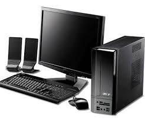
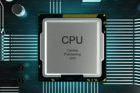
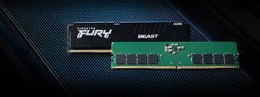
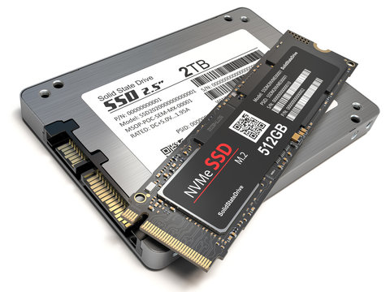

วิชาองค์ประกอบของคอมพิวเตอร์
ยินดีต้อนรับเข้าสู่บทเรียนออนไลน์เกี่ยวกับส่วนประกอบและการทำงานของระบบคอมพิวเตอร์
แนะนำรายวิชา
คอมพิวเตอร์ทำงานอย่างเป็นระบบ โดยอาศัยการประสานงานกันระหว่างฮาร์ดแวร์ (Hardware) และซอฟต์แวร์ (Software) ในบทเรียนนี้เราจะเจาะลึกไปที่ฮาร์ดแวร์หรืออุปกรณ์ที่จับต้องได้ ซึ่งแบ่งออกเป็นหน่วยสำคัญๆ เช่น หน่วยประมวลผล หน่วยความจำ และอุปกรณ์อินพุต-เอาต์พุต เพื่อให้เข้าใจว่าคอมพิวเตอร์หนึ่งเครื่องทำงานได้อย่างไร

CPU (Central Processing Unit)
หน่วยประมวลผลกลาง
สมองของคอมพิวเตอร์
CPU ทำหน้าที่คำนวณ เปรียบเทียบ และควบคุมการทำงานของอุปกรณ์ทั้งหมดในระบบ เปรียบเสมือนสมองของมนุษย์ ความเร็วของคอมพิวเตอร์จะขึ้นอยู่กับประสิทธิภาพของ CPU เป็นหลัก โดยภายในประกอบด้วย หน่วยคำนวณและตรรกะ (ALU) และหน่วยควบคุม (CU)

RAM (Random Access Memory)
หน่วยความจำหลักแบบชั่วคราว
พื้นที่ทำงานของระบบ
RAM เป็นหน่วยความจำหลักที่ทำงานร่วมกับ CPU โดยตรง ทำหน้าที่เก็บข้อมูลและโปรแกรมที่กำลังใช้งานอยู่ ณ ขณะนั้น ข้อจำกัดคือข้อมูลจะหายไปทันทีเมื่อปิดเครื่อง (Volatile Memory) ยิ่งมี RAM มาก คอมพิวเตอร์ก็ยิ่งเปิดโปรแกรมหลายๆ อย่างพร้อมกันได้ลื่นไหลขึ้น

หน่วยจัดเก็บข้อมูล (Storage)
พื้นที่เก็บข้อมูลถาวร
SSD และ HDD
ทำหน้าที่เก็บข้อมูลระบบปฏิบัติการ (OS), โปรแกรม และไฟล์งานต่างๆ ของเราอย่างถาวร แม้ปิดเครื่องข้อมูลก็ไม่สูญหาย ปัจจุบันนิยมใช้ SSD (Solid State Drive) เนื่องจากมีความเร็วในการอ่าน-เขียนข้อมูลสูงกว่า HDD (Hard Disk Drive) แบบจานหมุนรุ่นเก่าหลายเท่าตัว

อุปกรณ์แสดงผล (Output Devices)
การแปลงผลลัพธ์ให้มนุษย์เข้าใจ
หน้าจอ ลำโพง และเครื่องพิมพ์
ทำหน้าที่นำผลลัพธ์ที่ได้จากการประมวลผลของ CPU มาแปลงเป็นรูปแบบที่มนุษย์สามารถรับรู้ได้ เช่น หน้าจอ (Monitor) แสดงผลเป็นภาพ, ลำโพง (Speaker) แสดงผลเป็นเสียง และ เครื่องพิมพ์ (Printer) แสดงผลเป็นเอกสารบนแผ่นกระดาษ

อุปกรณ์รับข้อมูล (Input Devices)
สะพานเชื่อมจากผู้ใช้สู่คอมพิวเตอร์
คีย์บอร์ด เมาส์ และไมโครโฟน
เป็นอุปกรณ์ที่ทำหน้าที่รับคำสั่งหรือข้อมูลจากผู้ใช้ ส่งเข้าไปให้คอมพิวเตอร์ประมวลผล อุปกรณ์มาตรฐานที่จำเป็นต้องมีคือ คีย์บอร์ด (Keyboard) สำหรับพิมพ์ข้อความ และ เมาส์ (Mouse) สำหรับคลิกสั่งงาน หรือปัจจุบันมีหน้าจอสัมผัส (Touchscreen) ที่ทำหน้าที่รับข้อมูลได้ด้วย

ระบบเครือข่าย (Network)
การสื่อสารไร้พรมแดน
LAN, Wi-Fi และ Internet
ส่วนประกอบที่ช่วยให้คอมพิวเตอร์สามารถเชื่อมต่อและแลกเปลี่ยนข้อมูลกับคอมพิวเตอร์เครื่องอื่นได้ ประกอบด้วยอุปกรณ์ฮาร์ดแวร์ เช่น การ์ดแลน (LAN Card), เราเตอร์ (Router) และตัวรับสัญญาณ Wi-Fi ทำให้เราสามารถใช้งานอินเทอร์เน็ตและแชร์ทรัพยากรร่วมกันได้

แบบทดสอบท้ายบทเรียน
วัดความรู้ความเข้าใจเกี่ยวกับองค์ประกอบของคอมพิวเตอร์
ทดสอบความรู้ของคุณ
หลังจากที่เรียนรู้เนื้อหาครบทุกยูนิตแล้ว มาร่วมตอบคำถามสั้นๆ 10 ข้อ เพื่อทบทวนความจำและประเมินความเข้าใจในบทเรียนนี้กันครับ
เริ่มทำแบบทดสอบ